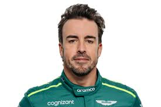

F1 DESKTOP
Fernando Alonso
Datos personales
Nombre y apellidos: Fernando Alonso Díaz
Dorsal: 14
Nacimiento: Oviedo, Asturias; 29 de julio de 1981
Lugar de residencia: Oviedo, Asturias

Presentación
Piloto de automovilismo español, galardonado como premio Príncipe de Asturias en 2005.
Aficiones
- Snowboard
- Surf
- Ciclismo de montaña
- Karting (de joven)
- Equipo de Esports FA Racing Logitech
Equipos
- Renault
- McLaren
- Ferrari
- Alpine
- Aston Martin
5 Conceptos clave de la Fórmula 1
- Pit-Stop
- Parada en boxes para cambiar neumáticos o realizar cualquier otra operación.
- Safety Car
- Coche de seguridad.
- Se utilizó por primera vez en la Fórmula 1 en 1973 y supone una medida de seguridad ante incidentes o condiciones meteorológicas muy adversas.
- Sobreviraje
- Pérdida de agarre de las ruedas traseras. El coche tiende a girar sobre sí mismo.
- Pit-lane
- Calle de boxes, delimitada en anchura por reglamento y bajo la cual los pilotos deben acatar ciertas normas.
- En él, la velocidad es limitada y controlada y su longitud determinada en parte las estrategias a seguir en un Gran Premio.
- Rake
- Ángulo de inclinación respecto al suelo del plano horizontal del monoplaza.
- El eje trasero está más alto que el delantero y eso provoca que el alerón delantero se acerque al suelo.
Resultados más destacados
-
2023
- Fichaje por Aston Martin.
- 4ª posición con 206 puntos, ocho podios y una vuelta rápida.
- Ganador de la FIA Action of the Year 2023.
-
2022
- Récord de la carrera deportiva más larga y mayor número de carreras en F1.
-
2021
- Tercer puesto en el GP de Qatar.
Últimos resultados
Resultados de la última temporada
| Fecha |
Puntos |
Posición |
Poles |
Victorias |
Podios |
| 2024 |
58 |
9 |
0 |
0 |
0 |
Enlaces de interés
Contenido Multimedia